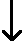
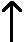

Unknown parameters
The table below shows the numbers of unknown parameters for the four models that we have considered for a numerical factor.
| Unknown parameters | Number of unknown parameters |
|
|---|---|---|
| Simplest model, yij = µ + εij |
µ | 1 |
| Linear model, yij = µ + β xi + εij |
µ and β | 2 |
| Quadratic model, yij = µ + β xi + γ xi2 + εij |
µ , β and γ | 3 |
| General factor model, yij = µ + βi + εij |
µ , β2 , β3 , ..., βg | g |
Explained sums of squares and degrees of freedom
Each addition of a term to the simplest model allows the residual sum of squares to be reduced (when the parameters are estimated by least squares). Similarly, each constraint on the most general model increases the residual sum of squares. These changes are explained sums of squares and have degrees of freedom that are equal to the difference between the number of parameters in the two models (or equivalently, the number of linear constraints imposed).
|
| add (g - 1) parameters |  |  | (g - 1) constraints |
|
Click Show linear model to add a linear model to the above hierarchy. The linear term has an explained sum of squares with 1 degree of freedom and the sum of squares explained by generalising the linear model to a general model that treats the factor as categorical has the remaining (g - 2) degrees of freedom.
When the linear model is displayed, click Show quadratic model to add the quadratic model to the hierarchy. The sum of squares explained by the quadratic model over the linear model has a further 1 degree of freedom, leaving (g - 3) degrees of freedom for further the sum of squares explained by the general factor model.
Antibiotic effectiveness
The table below initially shows the residual sum of squares for the model in which the concentration of antibiotic has no effect on the response variable (inhibition diameter). In this model, none of the variation in the response is explained by the model.
Drag the red arrow down past Linear to see the effect on the residual sum of squares of changing the model to one that models the effect of concentration linearly. The residual sum of squares reduces by 54.266 and this is displayed in the table as the sum of squares explained by the linear model.
Drag past Quadratic to add a quadratic term, further reducing the residual sum of squares (with a further 1 explained degree of freedom).
Finally drag past Factor to move to the most general factor model. The corresponding reduction in the residual sum of squares, 0.236, can be interpreted as being caused by lack of fit of the quadratic model.
Note that the sums of squares and their degrees of freedom add up to give the total sum of squares and its degrees of freedom, (n - 1).